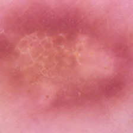
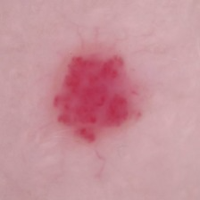
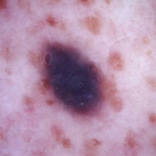

Diagnostic
Take a picture of your skin and upload it below to get a dermatological diagnosis on if you have skin cancer.
Sample Images To Download



Note that the accuracy of the diagnosis may vary and it is not a substitute for professional medical advice. Consult with a dermatologist or healthcare professional for accurate diagnosis and appropriate treatment.
The model currently can only detect signs of Dermatofibroma, Melanocytic Nevi, and Vascular lesions